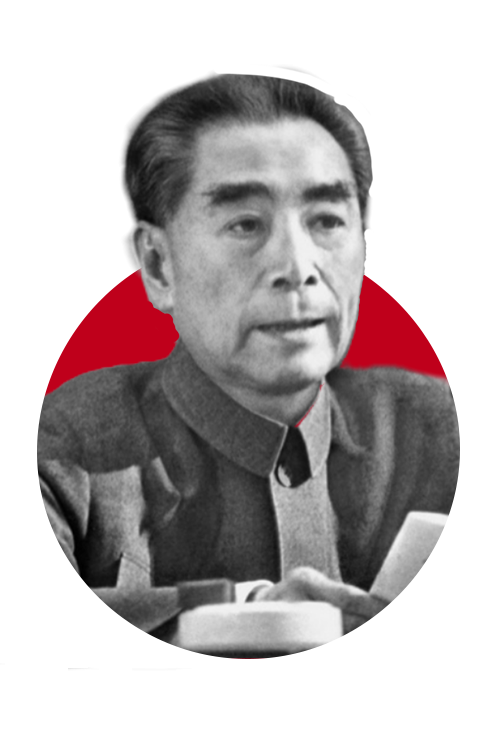
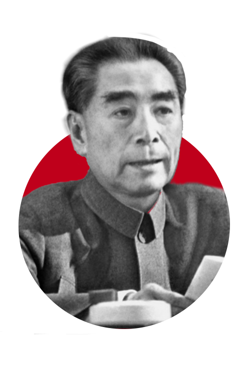
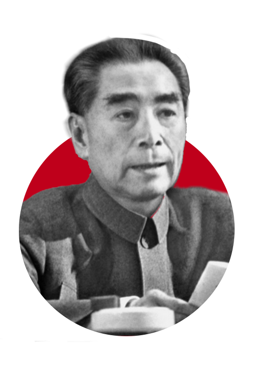
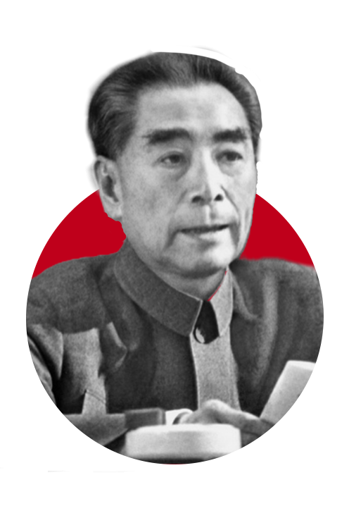

在中央红军面临生死存亡的关键时刻，周恩来主持了遵义会议前的通道会议（1934.12）、黎平会议（1934.12）和猴场会议（1935.1），为毛泽东的正确主张赢得支持奠定基础。在遵义会议上，他主动承担错误领导责任，支持毛泽东进入中央核心领导层，并负责会议组织工作，确保了历史转折的实现。
在湘江战役（1934.11）中，周恩来亲临渡口指挥部队突围，特别指示保护毛泽东安全渡江。 山城堡战役（1936.11）中，他协调红一、二、四方面军联合作战，取得三大主力会师后首场大捷，彻底粉碎国民党军事围剿。 指挥东征（1936.2）与西征（1936.5），巩固陕北根据地并为迎接二、四方面军创造条件。